第三章 理想的买入时机
怎么买、什么时候买以及买什么
在前两章中，你实际学到的比你自己意识到的还要多。你现在能够看着自己的投资组合并对照图形，分辨出优劣。你不会再盲目地听从经纪人的建议，而能够快速地看出你的投资组合中，哪些股票盈利概率高，哪些很可能会给你带来损失。知识就是力量，你现在正在变成大力士的过程中。但你仍有一些重要内容有待学习，现在地基已经打牢，你能轻易地分辨处于第二阶段的牛股和处于第四阶段的熊股。
下一步就是要构建建筑物的其余部分，找准理想的买入时机。另外，知道如何实施买入操作与知道买什么股票同样至关重要。尤其是在一个喧嚣的大牛市中，当你浏览股票图形的时候，你会发现有上百只符合买入条件的股票，这时学习如何精选出具有超级上涨潜力的A+型股票，同时剔除掉普通的股票，就非常非常重要了。
在本章后面部分，我们会解决“买什么”这个问题。实际上知道“买什么”比知道“什么时候买”要困难得多。但在此之前你需要掌握基础知识，即清楚地知道在何处进场。当你发现某只股票的图形有大幅上涨趋势时，会出现一个买入的完美时机，这个完美时机就是我们马上要讨论的焦点。
投资者的买入方式
对于投资者来说，买入一只股票有两个合适的时机，这两个买入时机的中心位置都在股价向上突破点附近。
第一个买入点，就是股价初次突破第一阶段并进入第二阶段的时候。
第二个，也是更安全的买入点，就是当推动首次突破的狂热的买方力量耗尽，股价回抽至突破点附近的时候。在回抽时买入的好处在于你可以评价和判断你看到的情况。诸如成交量是否明显放大？股价是否远离了突破点？成交量在回抽时是否萎缩？或者股票XYZ只是稍微突破了阻力区域，接着又回落至阻力区域以下？一一这种状况多半值得警惕。一旦你从这些方面审视，你就会清楚你关注的股票潜力是A+还是C-。
那么，哪种策略最好呢？你应该等待并且只在回抽时买入吗？不！如果你一味等待这种低风险买入时机，你就可能错过那种超级大牛股。这些不回抽的股票像火箭升空一样强势上涨。它们才将成为真正的大牛股，我们当然不希望自己被留在发射台上。
如果你是一名长期投资者，可以折中处理，在首次突破点附近买入拟持仓数量的一半，至于另一半，如果你认同这只股票在向上突破后的表现的话，就可以在股价回抽至突破点附近时再买入。不过，如果你是一名想买入这只股票的交易员，你就可以在首次突破点买入拟持仓数量的全部。股价的首次上涨对交易员来说就是一次本垒打。在迅速卖出获利以后，你可以在回抽时重新买入，期待第二次好的击球。（注：突破后走势如何结束？）
图3-1形象地显示了整个过程。
A点是首次买入的理想时机，对投资者尤其如此。在这个点上，风险非常低，因为你的买入价格只比底部支撑略高。同样重要的是，在此点买入后上涨的潜力巨大，因为整个第二阶段的上涨即将开始。这时买入唯一的不足在于还需要一些时间来积攒第二阶段充足的上涨动力。与生活中的其他事情一样，没有免费的午餐，这是一种成本收益的权衡。你的投资有着非常不错的回报/风险比率，但常常需要以耐心作为代价。在大约25%的例子中，其上涨是短暂的。对于投资者来说，这不是什么大事，却会让交易员“发疯”。因此投资者在第二阶段早期的买入要比交易员多得多。
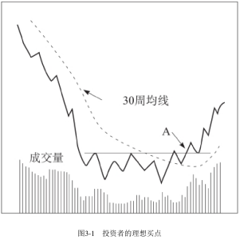
以上是理论。现在我们来看看现实生活中的例子。
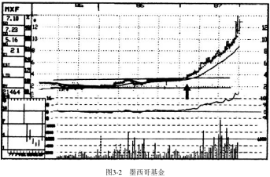
1987年初，墨西哥基金在3.25元处向上突破（见图3-2中的箭头）。在几天里价格迅速上涨35%，与此同时，成交量也开始放大。首次爆发的买入使股价暂时摸高到4.375元。两周以后，价格回落至3.375元一一非常接近最初的突破点。同时成交量也明显萎缩，这时你应该将剩余一半仓位买入。此后，上涨动力积攒完毕，放出巨量，在接下来的9个月里价格飙升至14元，投资者迅速获得了330%的投资回报。
交易员的买入方式
对于一次新的买入来说，还有另一个非常有利可图的买点，如果第二阶段上涨过程进行顺利，当股价回落至移动平均线附近并横盘整理，接着重新向上突破其阻力区域顶部时，这个买点就出现了（见图3-3中点A）。这时的买入称为追加买入。同样，这里也涉及风险和收益的权衡。
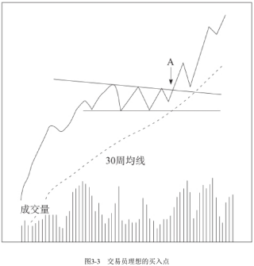
在这个例子中，再次快速上涨的概率非常大，但也有着较大的风险——此时第二阶段已经开始了一段时间，假突破的可能性增大。这种类型的买入更适合交易员而非投资者。不过，当整个市场非常强势，没有多少首次突破机会的时候，投资者也应该买入一些第二阶段末期的股票。
不同时期，决定是否买入第二阶段末期的票
A、在一个较大的牛市初期，许多股票都是第一次向上突破它们的底部（例如，在1982年第三季度，上千只股票都首次突破了第一阶段底部），投资者可选择的机会较多，因此完全没有必要进行追加买入。
B、到了牛市的后期——如在1986—1987年——还处于第二阶段初期的股票所剩无几，但追加买入的机会却大量出现。这时，即使是投资者也应该进行一部分追加买入。
图3-3显示了这种买入究竟是怎样的。移动平均线必须有清晰的上升趋势，这非常重要！马拉松选手需要在最后冲刺前保存体力，第二阶段上涨的股票也是如此。如果某只股票的移动平均线开始上下波动和走平，你就不能买入。即使它延续了趋势向上突破，也不可能具有我们所希望的那种动力。相反，应该寻找类似图3-3这样动力充足的个股。
斯威夫特能源为我所讲的内容提供了教科书般的例子。在形成了一个长达数年的底部阶段之后，1986年初斯威夫特能源的股价在2．125元处向上突破（见图3-4中箭头A）。在接下来6个月里，这只股票强劲地上涨至5．375元，收益率超过150%。普通投资者以及某些技术分析人员开始嚷嚷股价太高了。这是错误的。
在其后的5个月里，其30周移动平均线不断上升，这只股票也开始横盘整理，巩固了其巨大的盈利。1987年2月，斯威夫特的股票在5．5元处向上突破了新的横盘整理区域（阻力区域，见图3-4中点B），并在接下来的4个月里火箭般迅速上涨超过240%。毫不意外的是，它再也没有回调至5．5元这一突破点附近（当它刚进入第二阶段时，曾经回调至2．125元——第一次的突破点附近）。80%的股票在首次突破后都会出现明显的回抽，但二次突破后回抽的不到50%，尤其当这只股票会成为龙头股时。因此，对于这种类型的向上突破，正确的策略就是当它突破重要阻力区域时，全仓买入。
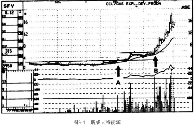
虽无正式规则，但以经验而言，我认为：
①长期投资者75%~80%的仓位应该在第二阶段初期买入，剩余仓位则在二次突破时买入。
②对于交易员来说则相反，应该在第二阶段中股价在移动平均线附近横盘整理之后，再次向上突破时买入仓位的80%，剩余部分在第二阶段初期买入。
深入分析
现在让我们慢慢审视某一只股票经由第一阶段底部进入第二阶段的过程，这样关于何时买入你就会十分清楚。请看图3-5，注意股票XYZ是如何在8元附近的支撑区域和12元附近的阻力区域之间运行的。整个底部阶段，股价都在30周均线附近运行，此时的均线不再呈陡峭的下跌状而是开始走平。它一旦向上突破12元的阻力区域，买入这只股票的最佳时机就到来了。记住：底部越大，上涨潜力就越大。
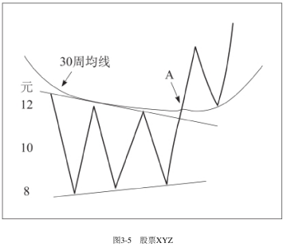
但是，如果激动人心的向上突破发生时（见图3-5中点A），你正在工作或是休假，怎么办呢？当晚上你拿起晚报发现这一点时会懊恼不已。XYZ昨日收盘价为11.5元，今日收盘价为14元，上涨2.5元，但你却错过了它。你应该做的不是第二天不惜一切代价买入，也不用给你的投资顾问打几十个电话追问情况。事实上，这样的处理方法反而会伤害你。
首先，这些做法会导致你做出情绪性的决定，这是万万不可的。我发现自己这些年最赚钱的决策总是在深夜或是周末做出的。这不是巧合。在这样的时间里你可以冷静分析图形所给出的信息，而不会受到来回震荡的大盘指数或是经纪人电话的影响。
其次，平时应该将重点放在你的工作上，这非常重要。一个好的、轻松的投资方式可以使你压力更小、获利更多。另外，也不要低估成熟心态的重要性，因为即使在最好的环境中，市场的压力仍然很大。
使用止损买单
从现在开始，无论何时，只要你想在突破点附近买入个股，请使用止损买单。有的读者已经知道那是什么，但是不会用；少数有经验的玩家用过它。大多数人不仅没用过，连那是什么都不十分清楚。现在，一切即将改变。学习适当使用这项专业技巧，是你将要掌握的另一个成功投资秘诀。从现在起你将会非常频繁地用到这个指令。在以后的章节中，我会告诉你如何使用与它原理相似的止损卖单来保护你的盈利并在一笔投资没有成功时将损失减至最小。
止损买单的作用就是告诉专业人士你想买入股票XYZ。但是，至关重要的是，仅在这只股票向上突破某一水平时才买入。在我们理想的股价周期图中（见图1-6），只有在股票显示出足够强劲的动力，向上突破12元附近的阻力区域时，我们才买入。设置一道在12．125元处1000股的止损买单，如果XYZ没能突破12元，是不会发生买入行为的。一旦它越过了12元这个关键价位，“立即以市价买入1000股XYZ”的指令就会发生，而你不需要一直盯着这只股票。你甚至可能都不知道你的指令是什么时候被执行的。但请注意，它不一定会成交于12．125元，而可能会以12．125元、12．25元甚至12．375元的价格被买进；但在大多数情况下，它会非常接近你的理想价格。然而，如果这只股票是在场外交易，就不允许设置止损买单或止损卖单。这时，你必须与经纪人打交道，让他帮你监控，一旦股价突破阻力区，就为你买进。
使用止损买单对我们学习的市场策略来说很重要。在结束这个话题之前，还有一些重要的提高技巧要掌握。在市场或生活中，没有一件事是单方面的。止损买单会帮你盈利，但也得注意一些潜在的风险。这种指令存在的一个问题是你可能执行得很差。虽然可能五十次中只会发生一次，但坏事发生一次也太多。
下面就来说说如何确保这种事情不会发生在你身上。假设股票XYZ昨天收盘价是11．625元。通过分析图形，你认为它很可能要向上突破12元附近的阻力区域了。第二天早晨开盘前你给经纪人打电话，下达了一道在12.125元处以止损买单买入1000股XYZ的指令。遗憾的是，就在开盘前这只股票的利好消息公布了，开盘价就是15元。现在，你不是在理想的12．125元处进入，而是骄傲地以15元一股的价格成了XYZ公司的股东。
虽然成交了，但此时的价格已经不是理想的买入点了。此时的回报／风险比率远远低于在12．125元处买入的比率。正是由于这种潜在的缺点，一些交易员和投资者试图解决这个问题。他们使用了限价止损买单，这意味着只能以你的理想价格（此处为12．125元）买入，而其他价格都成交不了。我发觉这样的委托单更不好，因为它所造成的问题比它解决的问题更多。当股价突破时，你根本没有机会买进，因为它快速穿越12．125元，而你的买单永远无法成交。这种情况不是每五十次中发生一次，而是每四次中就可能发生一次。
在限价以内买入
怎么办呢？有一种类似的限价止损买单，很少有人知道。它综合了最佳的止损概念，在你理想的买入价上方一些的位置设定限价。当股价穿越12元，如果想买进，我们在12．125元处设止损买单，同时在突破点上方0．25点处设限价——本例为12．375元。因此我们委托单的条件是：买入1000股XYZ，12.125元止损——12.375元限价。这下你买入该股便不会有任何问题。如果该股成交量很低，你就需要将买入的限价范围扩展至突破点以上0.5元，即买入1000股XYZ，12.125元止损——12.625元限价。这样，你就可以放松心情了，不用再担心有可能以高得吓人的价格成交。
另一个潜在的问题就是当你在周一或周二输入指令时，股票并未立刻突破，接着在周三，你非常忙而忘记了输入指令。结果：墨菲定律起作用了——有可能出错的事情，就一定会出错，这只股票开始向上突破。你的委托单没有下，这只股票从你面前一骑绝尘。每一个市场老手都有类似经历。有句古老的市场谚语说：“市场会如你希望的那样变化，但不会在你希望的时候。”这是千真万确的。在市场上浸淫多年之后，我坚信奥图定律：“墨菲是个乐观的人！”因此，任何能够减少市场上潜在不利因素的工具都是有价值的！这就是下一项技术令人难以置信的原因，它很简单但却非常实用。
假设你复盘时发现了两到三只股票具有潜在上涨形态，如果它们突破，你就想买入。你只需要按照以下步骤操作：对三只股票设置一个撤单前有效的限价止损买单。这意味着你和其他专业投资者一样有了一个常设指令，这个指令直到你撤单前或是成交后才结束。要注意的是你需要对成交情况给予关注，如果你忘记了这个指令，那就是你的责任了。当两三个星期以后你发现自己买入了2000股XYZ的股票你会非常吃惊。现在，你的买单应是：买入1000股XYZ，12.125元止损——12.375元限价，撤单前有效。
使用撤单前有效的限价止损买单会帮助你形成几方面的好习惯。
首先，你不用每天紧盯着市场行情，可以更专注于本职工作。
其次，你会做出更好的、更冷静的决策，因为这些决策和日间疯狂的市场行为无关。一天之中的大幅波动常常使你不安和恐慌，从而被震荡出局；或是市场突然的强劲表现使得你不顾一切冲上去买入，因为感到市场似乎突然要扔下你飙升。不要以这种方法操作。学习如何以有纪律且轻松的方式适当地买入股票是至关重要的。运用我的阶段分析方法，并与撤单前有效的限价买入指令结合，一切都会自动完成，这就是我们想要的。经过这些年，我明显地发现我的投资系统越是“机械”化、越少受到主观判断和情绪的影响，其盈利能力就越强。有意思的是，这个微妙但重要的事实得到了数十位华尔街职业投资家的肯定。我与他们交谈过，他们经过艰难的探索得到了同样的结论。
为什么会这样？很简单。因为我们都是普通人，恐惧和贪婪这两种可怕的情绪对我们有相当大的影响。恐惧使得你惊慌并在底部卖出，而贪婪又驱使你在顶部附近买入。这两者就是公众摇摆心理背后的驱动因素。为了不受“恐惧—贪婪综合征”的影响，应在每个周末抽出时间不受情绪影响地研究图形。你真的只需要一个小时就足够了，当然，你花费的时间越多越好。列一个清单，把你从许多图形里挑选出来的具有很好上涨潜力的股票记录下来。然后，每个晚上跟踪和研究这几只股票的图形，以及你投资组合中的其他问题。这种简单的练习会帮助你形成更加敏锐的市场感觉。当你根据你的可盈利的操作计划认真执行时，你会感到轻松和自信，不会感到不堪重负。
应该熟悉的涨跌规律
在进入“买什么”这个具体问题之前，我们来熟悉一些市场规律。它们令人难以置信地重复发生，所以你应该了解。它们会使你在辨别何时应该更激进，何时应该更小心时具有特别的优势。对于交易员来说，了解这些规律尤其重要，即使是投资者，通过关注这样的规律也能明显提高平均收益率。
据我所知，技术分析者中几乎没有人像亚瑟・美林和耶鲁・赫希一样在这个领域研究得这么深入。美林的著作《华尔街的价格行为》和赫希的著作《不要在周一卖出股票》都是关于这个主题非常好的书籍。在下面几页，由于得到了这两位作者的允许，我将会大量引用他们的数据，这样你就能更好地理解这些重复发生的市场规律。
我们要谈的第一个循环规律是最重要的。不论交易员还是投资者，都应该十分熟悉它——为期四年的总统选举循环（见图3-6）。
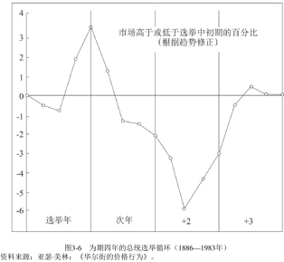
许多投资者错误地认为最好等到在选举之后再买入股票。他们的理由是华尔街更喜欢促进商业发展的共和党总统，如果选出了一位民主党总统，市场就会下跌。从以下两方面来说，这个观点都是错误的。
第一，在整个20世纪里，在民主党总统当政期间的道琼斯工业指数要比在共和党总统当政期间上涨得更多，尽管其中的一些上涨是由于民主党执政时期更高的通货膨胀引起的。
第二，也是更重要的一点，无论谁当选为总统，选举结束后的一年对于市场来说通常都是灾难。熊市出现的频率相当高。因此毫不奇怪，1969年、1973年、1977年和1981年，这些选举后的第一年都是显见的熊市（当然也有例外——1985年是牛市）。从历史上看，在选举后的第二年里熊市继续的概率很高，通常会持续到第二年的中期，直到底部形成（如1982年8月）。第二年剩下的时间会是牛市。总统任期的第三年是整个周期中市场最好的时候（直到1987年8月都没有例外）。第四年，又是一个选举年，市场行情起伏不定，通常上半年表现不佳而下半年上涨强劲。
在过去的100多年中，这个四年的循环周期表现出令人难以置信的规律性，似乎市场的大戏是由政治家们在谱写剧本。毕竟，任何一位总统都想获得连任，所以在连任选举开始的前两年里刺激经济合乎情理。而当他们成功地被选为总统后，通常会立即处理棘手的事情，这样在下一次刺激之前经济有足够的时间增长。因此，你应该紧盯市场指标，尤其是在选举后，这相当重要。
根据历史数据可以看出，不同年份中同一月份的市场表现同样存在规律。根据美林的数据，在过去80多年里，12月一直是表现最好的月份。这个结果是他简单地统计每个月中道琼斯工业指数是否上涨而得出的。在历史上的12月里，道琼斯工业指数上涨的概率为68%。
此外，图3-7显示，每年11月、12月和次年1月这三个月是一个市场年度中涨势最好的90天。这说明年末上涨不是神话。7月和8月也会出现明显上涨，这也支持了“夏季上涨综合征”这一说法。同时，2月、5月、6月和9月的市场表现非常不好，除非图形和指标都表现得非常强劲，否则这几个月对投资者来说是比较清闲的。所有的这些事实推翻了马克•吐温的论断，他说：“对股票投机来说，10月是特别危险的月份之一。其他的月份分别是：7月、1月、9月、4月、11月、5月、3月、6月、12月、8月和2月。”
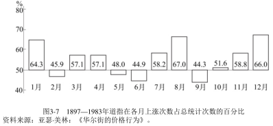
耶鲁•赫希在他的书中做了一些有趣的研究，这些研究是根据1950年以来标准普尔综合指数上涨或下跌的百分比而得来的。总的来说他的结论与美林的研究结果类似，但也有一些值得注意的不同之处。他的研究同样认为从头年11月至次年1月是很可能上涨的阶段，不过上涨最多的月份是11月，12月以微弱差距排在第二。此外，受益于近年来美国个人退休账户的买入，4月市场的表现也相当不错。表现较差的月份仍然是2月、5月、6月和9月。
现在让我们在显微镜下近距离观察一周内的每一天。同样，现实和臆测再次发生碰撞。普通投资者认为在经过一个愉快的周末之后，市场在周一会上涨。他们总听到这种说法，所以他们认为周五市场会跌，原因是交易员周末之前卖掉股票就不用担心周末出台的消息对股价造成不利影响。这简直大错特错！
赫希的数据（见图3-8）显示，周一是一周内表现最糟糕的，而周五是表现最好的。在熊市里，周一尤其可怕，这也是“忧伤的星期一”的来由。历史上著名的1987年10月508点的暴跌就发生在星期一，这并不令人惊讶。对交易员来说，明白熊市中周一常常会有大幅下跌非常重要，但是周二成交量经常很低，特别是当周二开盘后的60~90分钟延续了周一的跌势时。但即使是在牛市里，周一也肯定没有什么值得兴奋的表现。
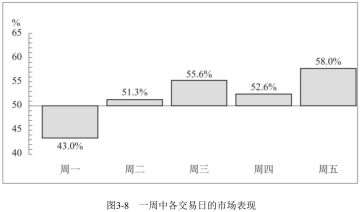
注：
（1）统计区间是1952年6月至1985年6月。
（2）统计对象是标准普尔综合指数比前一天收盘高的次数。
（3）如果周一是假期，则其后的那个周二包含在周一的数据中。
（4）如果周五是假期，则之前的那个周四包含在周五的数据中。
最后，需要澄清一个关于假期的误区。
美林在他的书中写道，报刊的头条经常是这样的：“尽管假期来临，但市场依然上涨——与通常在长假之前卖出股票不同，这次市场仍在上涨。”这也是错误的！事实恰好相反。在假期前一天通常都是上涨的。在大约68%的这种日子里，整个市场都是上涨的。
当然，如果一个很好的向上突破发生在周一，或者5月，仍然应该买入。不过，当你对自己的投资组合做调整时，了解我为你提炼出来的这些重要规律还是值得的。学习这些内容有利于知道何时应该积极大胆，何时应该小心谨慎，并且能够使你对买入卖出时机把握得更加精准。花时间熟悉这些规律——你所花的时间会给你带来盈利——是值得的。
什么不可以买
在进入接下来非常重要的问题“买什么”之前，我要确定你明白什么不可以买。
初学技术分析的人甚至一些不应犯错的专业人士经常犯的一个错误就是，在某只股票向上突破其底部区域，但其股价还低于下降的30周均线时就买入这只股票。这并不是应该买入的股票，因为它还没有做好持续上涨的准备。在大多数情况下，这只股票会有几周的短暂上涨，接着可能就停滞不前。最好的情况就是伴随着移动平均线走平，这只股票会经历另一个底部阶段。而最坏的情况就是它向下突破交易区间的底部，开始一次新的快速下跌。
下面有1973-1974年熊市的两个例子，可以很好地说明我的意思。西联汇款公司的股票在1972年大幅下跌，从68元跌至44元。这时，想要抄底的买家进入市场买入这只股票。
接下来的几个星期里，貌似一个底部开始形成（见图3-9）。这只股票注定会下跌，因为在那个“貌似”的底部形成的过程中，30周均线始终在下降。
另一个关键的事实是，从交易区间向上突破的位置（见图3-9中点A）位于其均线以下。尽管其后股价突破了均线，但最初的突破点发生在均线以下，这是一个十分危险的信号。
更危险的信号是这只股票的移动平均线从来没有停止其下降的趋势。这种形态的股票无论看上去多么便宜都绝对不能买入。
现在请仔细看这幅图。在接下来的一年半里，股价跌至看上去很便宜的45元，进而跌至更加便宜的8．5元！
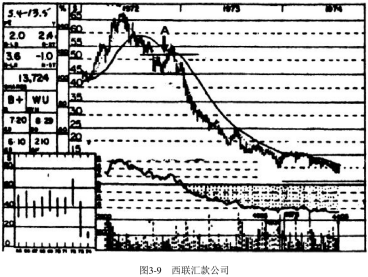
研究康隆集团，你会发现相同的形态再度出现。当股价由45元急跌到22元时，这只股票看上去很便宜。交易区间在27元到22元间逐步形成。股价在交易区间内上下震荡，均线继续下降（见图3-10）。当康隆集团的股价向上突破27元（见图3-10中点A）时，你根本不应考虑买入它，因为其向上突破点发生在均线以下，并且其股价从没有站上过均线。此外，这只股票的均线一直在无情地下降。不管是在27元处还是22元处买入都不合算，这点是可以预计的。6个月之后，它的交易价格是4.125元！
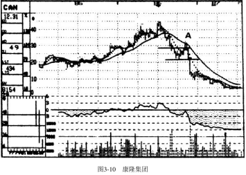
买什么--自上而下的方法
与什么时候买同样重要的是买什么。实际上，这是一个复杂得多的决定。一旦你消化了本节的知识，买什么就有章可循了。
事实上这一方法分为三步，我称其为“自上而下”。我的意思是你应该：
①先看大的问题——整体市场表现如何；
②后看小的问题——什么股票看起来是最佳选择。
③处于这两个问题中间的问题是——哪一个行业（或类别）技术面最好。
因此，筛选过程是按照下面的步骤进行的：
1、市场趋势如何？如果市场趋势不好，即使你发现某些个股出现突破，也要十分谨慎。当大势不利于你，你成功的概率会相当低。
2、哪些行业的技术面最佳？这个问题的重要性怎么强调都不过分。因为我的研究不断证明：如果从图形上看两只股票都有很好的上涨潜力，但一只选自强势行业，而另一只选自弱势行业，最终这两只股票的表现会大相径庭。选自强势行业的那只股票通常都能快速地上涨50%~75%，而选自弱势行业的那只股票可能只勉强上涨5%~10%。
3、一旦你确认整个市场趋势良好而且某一行业的股票在技术上表现最为抢眼，最后一步就是瞄准并买入这个行业里面从图形上看最好的一到两只个股。
如果你遵循以上三个步骤，你会发现当市场强劲上涨时，你手里的大多是那些表现最好的股票，而当整个市场走熊时，你已经卖出股票，持有大量的现金。
如何执行该策略
上面讲的都是理论，是可以指导你成功的理论。现在你必须学习如何执行它。跟通常一样，得从分析市场本身开始。要从技术上确定市场的强弱，你不能仅仅根据6点新闻播报中道琼斯工业指数是涨了30点还是跌了40点来做出判断。可惜的是，许多投资者就是这样做的。这种粗浅的方法必然会使你在市场中赔钱，主要有以下两方面的重要原因：
第一，日复一日的变动情况常常会掩盖市场的真实趋势。你经常会错把市场的短期波动当作其主要趋势。
第二，即使你运气不错，看出了主要趋势，但此时市场的潜流又经常已经向相反的方向运动了。
我的意思可以通过一个绝佳的例子来理解，参见图3-11。
从1982年初期至8月中旬的低点，整个市场趋势都是下降的。然而，在同一时间，纽约证券交易所里具有上涨形态的股票所占百分比已经在缓慢但明显地提高。每周我都要计算纽约证券交易所中处于第一和第二阶段的股票占股票总数的百分比——与道琼斯工业指数相对应。这好比对纽约证券交易所中所有的1500多只股票做“民意调查”。
一个更快捷的方法就是对标准普尔指数的成分股进行同样的计算。这个百分比仅仅是《专业价格分析者》中组成我的“判断依据”的50个技术指标之一，也仅仅是我在1982年7月做出市场转牛的判断时所依据的众多关键指标中的一个。
一个月后，历史上的一个大牛市拉开了帷幕。当时大多数人都预测股价会进一步下跌，而我的大部分技术指标都显示一个新的大牛市正要出现。当时市场是必须转向的吗？当然不是。就像我们所知道的那样，市场往往与人们的预期相反，并不是如预期般运行。然而，当你根据这个上涨股票占比指标进行判断，你就会以超过80%的概率得到正确的结论。对于预测未来趋势来说，这一准确率已相当高！
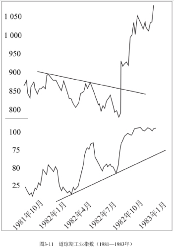
注：本图上半部分为1981—1983年的道琼斯工业指数，下半部分为纽约证券交易所处于第一阶段和第二阶段股票数量占全部股票数量的比率。资料来源：《专业价格分析者》。
判断市场的方法就是让这些值得信赖的指标不带感情地为你做出决定。我会在后面教给你关于这些指标的知识，这里我不打算展开。现在我们假设市场趋势是上升的。在你学完第八章以后，你就有能力发现下一个重要的市场拐点了！
选择行业
查看了市场指标，确认了整个市场具备上涨趋势之后，就应该着手下一步。聚焦于未来几个月内上涨潜力最大和下跌风险最小的一到两个行业。这一步不仅重要，而且极其紧要！在多年观察和学习市场周期之后，我深信行业分析与市场时机判断同等重要，在某些时候，甚至更加重要。例如，在1977年，股票市场呈现出分化，大盘蓝筹股经历了普遍下跌，而二线股票却表现良好。
我们应该从哪儿开始分析行业呢？十分确定的是，不是通过阅读基本面资料。1982年当我判定活动房屋行业将会转向上涨时，整个行业的盈利状况不佳，但它却成了1982—1983年上涨中的明星。几乎在同一时间（1981年初），由于每桶石油价格上涨至38元，石油类股票的股价被认为会冲上天。有报道说由于严重短缺，石油价格将会上涨至100元一桶。然而，石油类股票的图形描述的却是另一个故事。第三阶段顶部的主要特征正在大多数石油类股票以及整个石油板块的图形中形成（见图3-12）。因此，对于石油类股票，合理的投资策略应该是开始锁定利润，而不是听从乐观的基本面分析者做出的上涨判断。后来的事实是，石油类股票在其后几年中大幅下跌。
下一步的学习从研究图形本身开始。为了学习，我们将浏览标准普尔各行业的周线图。行业图形与个股图形唯一的不同在于行业图形上不显示成交量。除了成交量，其他的内容都完全一样，你可以从图3-13和图3-14中看出。
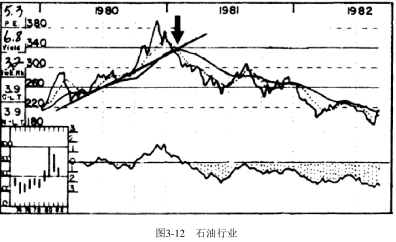
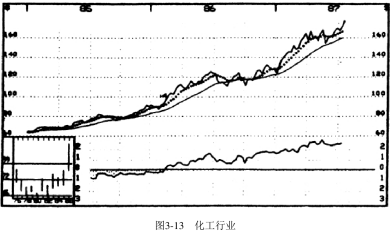
首先，确认这个行业目前处于哪个阶段。图3-13显示，在1987年，化工行业处于强劲上涨的第二阶段，而同时，公共电力行业（见图3-14）处于下降的第四阶段。因此，在1987年上半年，无论化工行业内某只股票的图形看起来多么弱势，我也不会考虑卖空它。如果你持有一只强势行业的股票，当它跌破支撑走熊时，你应该抛售，但是不应该卖空它。同理，在1987年3月，无论公共电力行业里的某只股票表现如何抢眼，我也不会考虑买入它。这说明了另一个道理：即使市场普遍上涨，但如果你选择了错误的行业，仍然很容易赔钱。
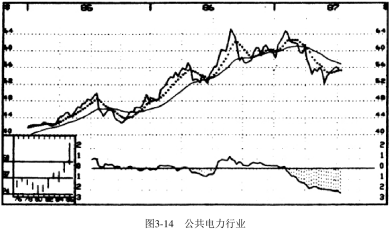
在分析行业时，标准与分析股票相同。投资者应该主要买入突破第一阶段底部形态的行业，而交易员应该寻找第二阶段横盘后突破的行业。
但行业分析与股票分析有一个不同点。如果一只股票处于已经成型的第二阶段上涨趋势中，并远远高于其支撑区域，投资者通常不应该急于买入。但对于已经处于第二阶段的某个行业来说，如果你从中发现了某只初次突破其第一阶段的股票，是应该买入的。
同样，如果一名交易员发现了某只股票已经经历了第二阶段横盘，有进一步上涨迹象，而其所在的行业才刚进入第二阶段，这名交易员应该买入这只股票。
研究行业时，最重要的因素就是看这个行业是不是健康的，也就是说，该行业不能处于第三或第四阶段。综上所述，对于投资者来说，最佳投资机会就是当某只股票初次突破后位于第二阶段初期，同时这只股票所在的行业也处于相同阶段时。对于交易员来说，理想的投资机会就是当某只股票在第二阶段再次向上突破，而其所在的板块也表现出类似形态时。
另一种选择行业的办法是浏览行业中的个股图形。当你浏览图形的时候，如果发现某个行业里面的几只股票突然上涨（或者下跌），这就是明显的信号。根据行业划分，将形态最好的几个行业列入清单。如果你发现有六个行业的图形都具有上涨的趋势，而你挑选的最有潜力的个股来自其中的一到两个行业，这就透露出重要信息了。虽然六个行业都有可能上涨，但同时拥有几只最佳个股形态的行业将会是表现最好的。
这个方法也能以另一种方式帮助你做出正确操作。有的时候，标准普尔的行业图形会被特定板块中某只股票所出现的大幅上涨或下跌所扭曲。通过使用这种交叉扫描的方法，当某只股票有被收购的利好或面临某种特殊的利空时，你就不会对其一无所知。
运行方式
1978年是个不错的年份，当时我注意到博彩业股票的图形表现出不同寻常的上涨力量，同时酒店和休闲行业（见图3-15）从技术上也表现出强劲的上涨力量。（标准普尔没有单独划分博彩业，所以你只能监控酒店和休闲行业。）除此以外，它们各自的相对强度线也极强。更明显的是没有一只博彩业的股票图形表现弱势。当时有这么多可以买入的股票供选择，我感觉自己就像在糖果店里的小孩，不知道该选择哪一个才好。一般来说，很少见到上涨或下跌的力量会如此广泛地影响到某个行业里的每一只股票，当这种情况确实发生时，不要忽视市场给出的明显信号。从1978年3月下旬起，我就开始了博彩业股票推荐的狂欢活动。在接下来的两周内，我推荐了百丽公司（见图3-16，见图中买入点的箭头）、恺撒世界公司（见图3-17，见图中买入点的箭头）、哈拉斯公司、假日饭店和花花公子。这几只股票在接下来的几个月内，上涨幅度在105%~560%，盈利丰厚。
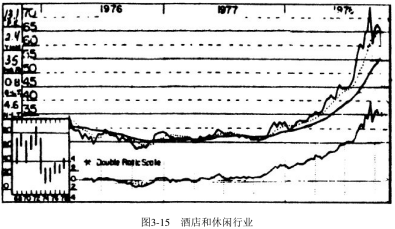
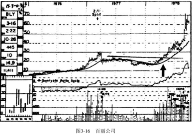
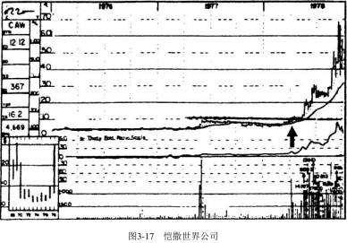
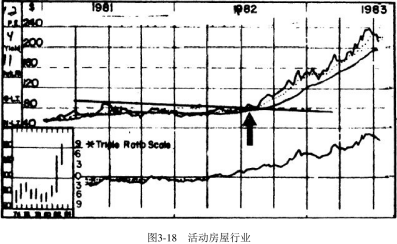
在1982年夏天，活动房屋行业（见图3-18）也出现了一两波上涨。行业图形显示整个行业向上突破了牢固的第一阶段底部。相对强度线也是上升的，并且所有活动房屋行业的股票看上去都不错。因此，在6月上旬至8月中旬之间，《专业价格分析者》推荐了8只活动房屋行业的股票——马车夫房车公司（见图3-19）、弗利特伍德房车公司（见图3-20）、橡木住房公司、菲利浦公司、红人公司、天际线公司、温尼巴格房车公司和捷迈公司（见图3-19、图3-20中买入点的箭头）。这个行业在接下来的一年里上演了上涨的神话，整个行业一路飙升，平均收益率高达260%。
不要错误地以为这些股票之所以表现优异是由于市场正好处于一个新的牛市。牛市肯定会好一些，但如果你不通过技术分析，可能就会掉入基本面分析的陷阱里，买入类似华纳公司（见图3-21）这样的低市盈率的股票。华纳绝对是一家好公司，在1982年夏天当市场正进入新的牛市时，它最近12个月的盈利相当不错，达到每股4．35元，市盈率才略高于11倍。如果你在1982年买入了它而没有买入活动房屋行业的股票，一年以后你遭受的就是60%的损失，而不是获得260%的盈利！

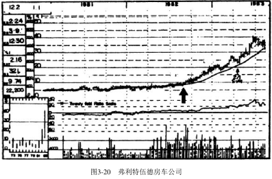
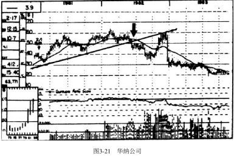
技术分析能预示应远离某只股票吗？当然可以！请看图3-22娱乐行业的图形。
1982年夏天当活动房屋行业向上突破时，娱乐行业向下突破了其移动平均线。
而且，相对强度线走弱，最终跌至负的区域。
最后，行业内的个股表现涨跌各异，有些股票表现尚可，而另外一些股票，如华纳公司，却十分糟糕。请注意，在那个夏天，当其他大多数的行业和股票正在进入第二阶段时，华纳已经下跌至第四阶段。1982年在其第一次明显下跌之后，更多的麻烦还在后面。在1982年末，由于卖空引起的快速反弹使得股价从30多元回到了60元。然而，这次反弹在下降趋势线的压制下最终失败（就像支撑区域一样，一旦被突破，就会成为新的反弹阻力区域；同样的道理，上升的趋势线一旦被跌破，就会成为日后反弹的阻力线）。因此，当华纳的股价大幅下跌，跌至20元时，那些搜罗便宜货的买家就受到了严厉的惩罚。
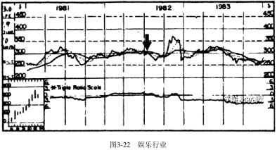
游戏永不改变。图3-23和图3-24显示了一个行业和一只个股的图形，它们都获得了不错的收益。
从1986年8月开始，我判断石油行业开始转牛。整个行业向上突破了重要的阻力区域，相对强度线漂亮地上升并且进入了正的区域。最后，这个行业里绝大多数的股票都呈现出极为明显的买入信号。而当时原油价格将近10元一桶，市场上还有人担心其价格会跌至6~8元一桶，这些图形极其精准地预见到了未来。
一年后，不仅石油类股票的股价上涨很多，而且原油价格也涨至近22元一桶。这与1981年初期石油问题被高度关注但在技术上石油类股票表现不佳时的情形恰好相反。这也是一个在操作上与大众观点相反的突出范例。因此，毫不奇怪，1986年《专业价格分析者》推荐的石油、石油开采、石油设备等与石油相关的十多只股票表现喜人，其中美国石油天然气公司（见图3-24）等几只股票表现特别优异。
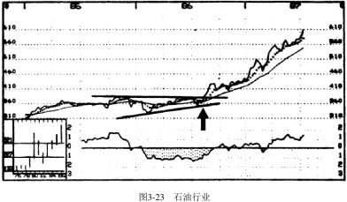
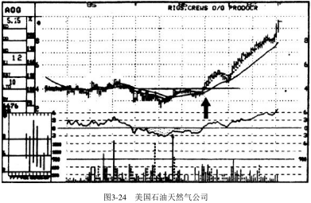
接着，在1986年的12月，计算机行业的股票突然迅速上涨，并且处于可以激进买入的区间。整个计算机行业结束了第二阶段30周均线附近的横向盘整（见图3-25），然后向上突破重要的阻力区。
此外，相对强度线的走势健康，始终位于正的区域并达到新高。一个利好信号是：长期走势的背景图显示，计算机行业指数达到了历史高点。
最后，这个行业内的好几只个股已经开始了强有力的向上突破。
康柏公司（见图3-26）、麦克波利斯和坦德姆是当时《专业价格分析者》所推荐的该行业中的三只股票。整个计算机行业的强劲表现使得这三只股票都成了大赢家。
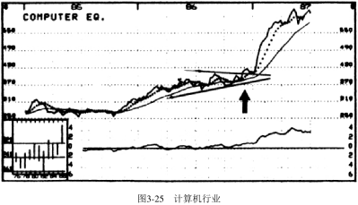
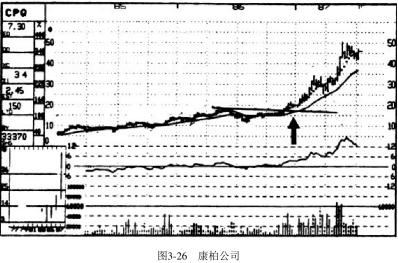
当所有这些重要指标都显示利好时，请立即跑向（而不是走向）你的电脑，尽你所能快速地下买单。每年都有几个行业在上涨或下跌方面远比其他行业突出。
通过以上步骤，你就能让自己始终立于潮流之先，同时，你还能避免遭受残酷的下跌。如果整个市场陷入熊市，你还可以卖空弱势行业里表现最糟糕的那些股票来盈利。
不要低估行业分析的重要性。我见过无数的例子，虽然个股图形看上去很好，但最后表现平平。当我查看其所在行业图形时发现，其行业图形不好。另外，我也见过很多个股图形一般，最后却成为大牛股的例子，究其原因就是该股所在行业正在强劲地上涨。我还见过很多例子，尽管整个市场行情很好，但在弱势行业里的那些股票却惨不忍睹。因此千万不要认为在一个牛市里所有股票最终都会上涨。
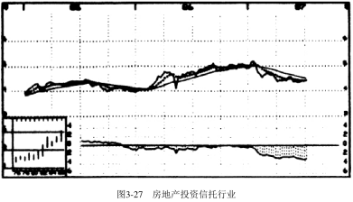
下面的例子能够很好地说明我所讲的情况。
尽管从1986年底至1987年夏天，道琼斯工业指数上涨超过了600点，房地产投资信托行业的表现却很糟糕（见图3-27）。洛马斯•内特尔顿抵押贷款公司的股票同这个行业里的其他许多股票一样，在1987年前6个月大盘快速上涨的时候却大幅下跌（见图3-28）。
这时在操作上就出现了常见的基本面陷阱：市盈率现在非常低，并且这是一家好公司，怎么能错过这样的股票呢？但现在你不会再上当了：很简单——因为这个行业表现不佳，并且个股形态在新年伊始就处于危险的第三阶段。一旦股价跌破29．5元的支撑，它就进入了更糟糕的第四阶段。最后，相对强度线也很差。从这些不利的指标就很容易知道为什么当道琼斯工业指数大幅上涨时，这只股票却下跌超过30%。
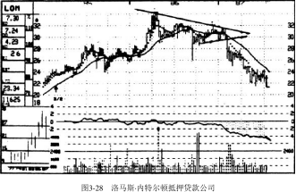
1987年经纪行业的图形表现（见图3-29）可以作为另一个例子来说明板块对个股的负面影响。前述洛马斯•内特尔顿抵押贷款公司是在表现不佳的行业里的一只熊股，而麦当劳投资公司（见图3-30）的股价表现相对还不错，然后在1987年初出现了一个向上的假突破（点A）。像这样的走势在一个表现不佳的行业里是非常正常的。这只股票没有迅速上涨，反而像科里根公司一样在历史上著名的大牛市中下跌，这些都是可以预见的。教训显而易见。不要自以为精明，企图在弱势行业里选出大牛股。不要尝试证明自己是一个市场天才。让所谓的天才亏钱，而你需要做的只是单纯地从A+行业中选出A+的股票，然后享受搭便车的愉悦以及丰厚的回报！
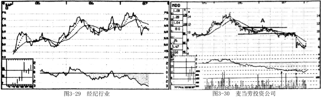
测 试
1、股票XYZ交易非常活跃，流动性很高。目前的交易价格是23.5元。你决定在其向上突破25元这个重要阻力位时买入。那么你应该怎样下单（从以下选项中选出一个）？
A.买入1000股XYZ，25.125元止损。
B.买入1000股XYZ，25.125元止损——25.25元限价，撤单前有效。
C.买入1000股XYZ，25.125元止损——25.375元限价，撤单前有效。
D.买入1000股XYZ，25.125元止损一一26元限价，撤单前有效。
2、当下图中的股票在20元处向上突破其趋势线时你会买入吗？如果不会，为什么？
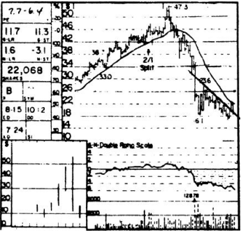
3、你绝对不应该在总统大选后的次年买入股票。正确 错误
4、下面两幅图中，哪一个向上突破更适合投资者？哪一个更适合？
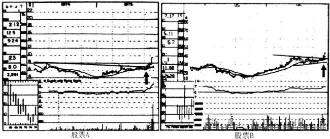
5、当你下达一份撤单前有效的委托单，其在两周内有效。正确 错误
6、下图在股票XYZ所处的A、B、C、D四点中，哪一点是最安全的买点？
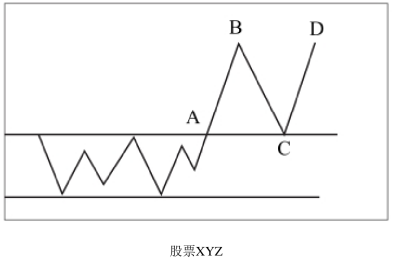
7、历史上总统大选周期的第三年是整个四年周期中上涨幅度最大的。正确 错误
8、交易员应该只在回抽时买入。正确 错误
9、在一个牛市的后期，即使是投资者也应该进行追加买入。正确 错误
10、即使下图中的个股的图形很有上涨潜力，但如果市场指标都偏负面，并且这只股票所处行业表现也不好，你就不应该买入。 正确 错误
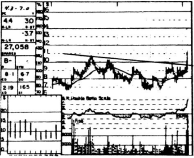
11、第一阶段底部的突破通常会伴随着向最初突破点的回抽，从而提供给你第二次买进的机会。正确 错误
12、下图中的时间是1987年初，你正确地意识到市场快要开始一波强劲的上涨。你会买入下面两幅图中哪个行业的股票？A还是B?为什么？
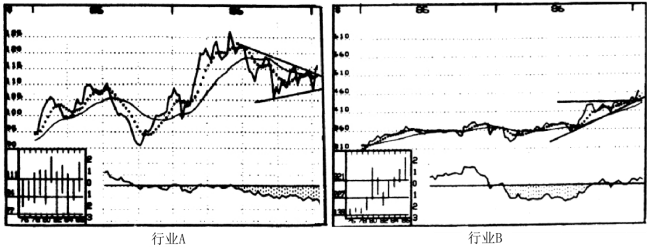
答 案
1、选C。止损买入单应该设在突破点；
因为这只股票是一只交易活跃的股票，所以限价应该设在突破点上方0．25元处；并且应该设一个撤单前有效的买单。
2、不应该买入。
因为股价仍在30周移动平均线下方，而且移动平均线还在下降，所以离它远点。这样的分析不仅在理论上成立，而且在现实中经得起检验。
这幅图是卡乐氏公司的股票图形，这次向上突破发生在1973年的20．5元处。一年以后，它的价格跌到了6元。
3、正确。
在总统大选后的第一年，股市下跌的概率非常高，如果你所观测的指标都显示不利的话，那么就应该远离股市。但是也有一些例外，如1965年和1985年是上涨的。
4、股票A更适合投资者，因为它向上突破了一个长期的第一阶段底部。
股票A是诗韵公司的股票图形，这次突破发生在1975年的7．125元处，一年以后股价接近20元。
股票B更适合交易员。在横盘之前它已经上涨了300%。这是苹果电脑公司的股票图形，它在1986年再次向上突破39元后仅过了6个月股价就超过了80元！
5、错误。一份撤单前有效的委托单意味着在撤单前始终是有效的。但是不要忘了持续关注股票图形，如果图形发生变化让你改变了想法，就应该将其撤销。
6、选C。回抽至最初的突破点是最安全的买入点。
7、正确。
8、错误。虽然交易员可以在回抽时买入部分仓位，但他们还是应该在向上突破点买入其拟持仓的大部分。如果初次突破上涨成功，交易员可以迅速将其卖出锁定利润，然后在回抽时再次买入，这是两次获利的好买卖。
9、正确。在该时点，只剩下少量处于第一阶段底部的股票。
10、正确。永远不要与市场和行业的趋势作对。这是美国发动机公司的股票图形，这次突破发生在1974年初的10元处。市场指标和行业表现都很负面，其后还不到1年，股价已跌至3元附近了。
11、正确。但在二次突破的例子中，这种说法在大多数情况下都不成立。
12、你应该选择行业B。
首先，它处于一个更加强劲的上升趋势中，而且没有阻力区域存在。而行业A有着大量的卖压。
其次，行业A的相对强度线糟糕，而行业B的相对强度线不错。A是区域性银行业，7个月后当道琼斯工业指数上涨600点时，行业A却基本上没有变动。而B是石油行业，它是1987年前7个月中上涨最猛的行业之一。